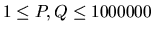

| Invitation Cards |
In the age of television, not many people attend theater performances. Antique Comedians of Malidinesia are aware of this fact. They want to propagate theater and, most of all, Antique Comedies. They have printed invitation cards with all the necessary information and with the programme. A lot of students were hired to distribute these invitations among the people. Each student volunteer has assigned exactly one bus stop and he or she stays there the whole day and gives invitation to people travelling by bus. A special course was taken where students learned how to influence people and what is the difference between influencing and robbery.
The transport system is very special: all lines are
unidirectional and connect exactly two stops. Buses leave
the originating stop with passangers each half an hour. After reaching
the destination stop they return empty to the originating stop,
where they wait until the next full half an hour, e.g. X:00 or
X:30, where `X' denotes the hour. The fee for transport between two
stops is given by special tables and is payable on the spot. The
lines are planned in such a way, that each round trip (i.e. a journey
starting and finishing at the same stop) passes through a Central
Checkpoint Stop (CCS) where each passenger has to pass a thorough
check including body scan.
All the ACM student members leave the CCS each morning. Each volunteer is
to move to one predetermined stop to invite passengers. There are as many
volunteers as stops. At the end of the day, all students travel back to CCS.
You are to write a computer program that helps ACM to minimize the amount of
money to pay every day for the transport of their employees.
The input consists of N cases. The first line of the input contains only positive integer N. Then follow the cases. Each case begins with a line containing exactly two integers P and Q, . P is the number of stops including CCS and Q the number of bus lines. Then there are Q lines, each describing one bus line. Each of the lines contains exactly three numbers - the originating stop, the destination stop and the price. The CCS is designated by number 1. Prices are positive integers the sum of which is smaller than 1000000000. You can also assume it is always possible to get from any stop to any other stop.
For each case, print one line containing the minimum amount of money to be paid each day by ACM for the travel costs of its volunteers.
2 2 2 1 2 13 2 1 33 4 6 1 2 10 2 1 60 1 3 20 3 4 10 2 4 5 4 1 50
46 210